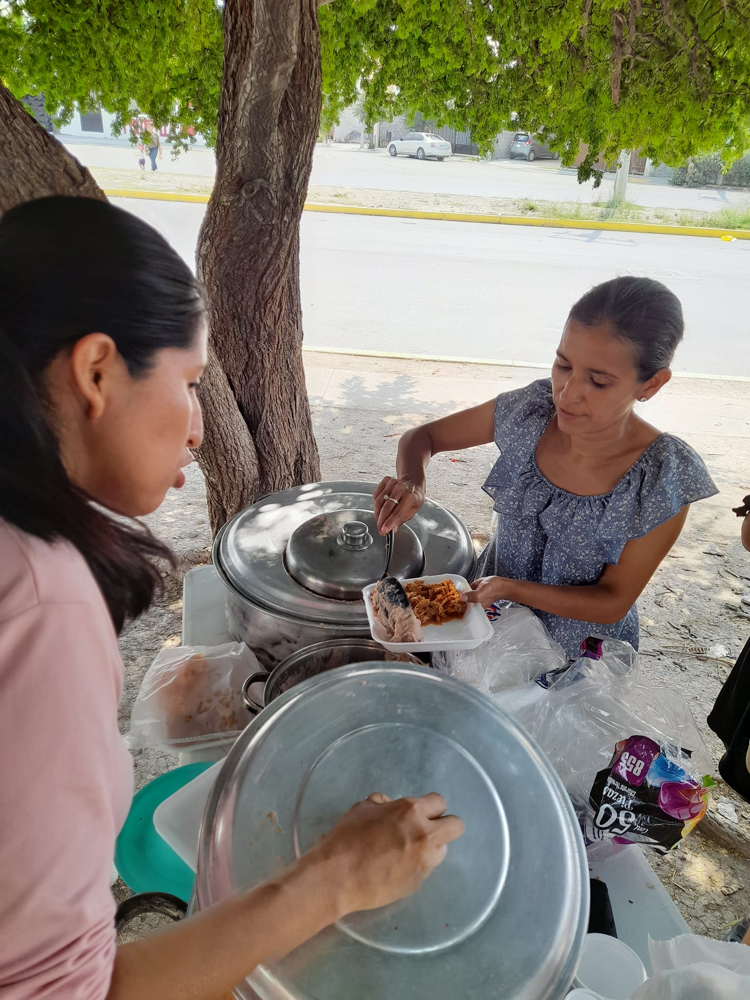

Nuestra historia
Fue en junio del año 2021 cuando, movidos por la convicción de que cada niño merece una oportunidad justa en la vida, iniciamos un pequeño comedor ubicado en un parque perteneciente al área de Juárez, N.L. Fue en ese momento que nace Destellos de Misericordia. Motivados por las sonrisas en el rostro de los niños y niñas cuando reciben un plato de comida, hemos seguido con esta hermosa labor, atendiendo por día de comedor alrededor de 100 a 150 niños y personas en necesidad.